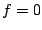
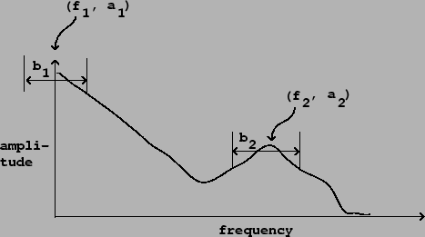

As suggested at the beginning of the previous chapter, a powerful way to synthesize musical sounds is to specify--and then realize--specific trajectories of pitch (or more generally, frequencies of partials), along with trajectories of spectral envelope [Puc01]. The spectral envelope is used to determine the amplitude of the individual partials, as a function of their frequencies, and is thought of as controlling the sound's (possibly time-varying) timbre.
A simple example of this would be to imitate a plucked string by constructing a sound with harmonically spaced partials in which the spectral envelope starts out rich but then dies away exponentially with higher frequencies decaying faster than lower ones, so that the timbre mellows over time. Spectral-evolution models for various acoustic instruments have been proposed [GM77] [RM69] . A more complicated example is the spoken or sung voice, in which vowels appear as spectral envelopes, dipthongs and many consonants appear as time variations in the spectral envelopes, and other consonants appear as spectrally shaped noise.
Spectral envelopes may be obtained from analysis of recorded sounds (developed in Chapter 9) or from purely synthetic criteria. To specify a spectral envelope from scratch for every possible frequency would be tedious, and in most cases you would want to describe them in terms of their salient features. The most popular way of doing this is to specify the size and shape of the spectral envelope's peaks, which are called formants. Figure 6.1 shows a spectral envelope with two formants. Although the shapes of the two peaks in the spectral envelope are different, they can both be roughly described by giving the coordinates of each apex (which give the formant's center frequency and amplitude) and each formant's bandwidth. A typical measure of bandwidth would be the width of the peak at a level 3 decibels below its apex. Note that if the peak is at (or near) the  axis, we pretend it falls off to the left at the same rate as (in reality) it falls off to the right.
|  |
Suppose we wish to generate a harmonic sound with a specified collection of formants. Independently of the fundamental frequency desired, we wish the spectrum to have peaks with prescribed center frequencies, amplitudes, and bandwidths. Returning to the phase modulation spectra shown in Figure 5.16, we see that, at small indices of modulation at least, the result has a single, well-defined spectral peak. We can imagine adding several of these, all sharing a fundamental (modulating) frequency but with carriers tuned to different harmonics to select the various desired center frequencies, and with indices of modulation chosen to give the desired bandwidths. This was first explored by Chowning [Cho89] who arranged formants generated by phase modulation to synthesize singing voices. In this chapter we'll establish a general framework for building harmonic spectra with desired, possibly time-varying, formants.